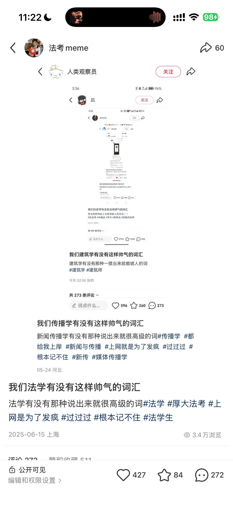
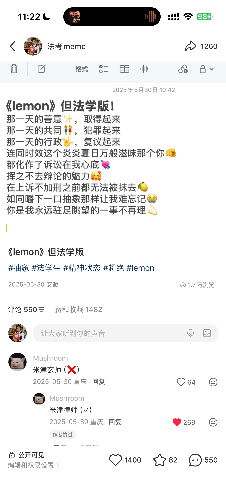
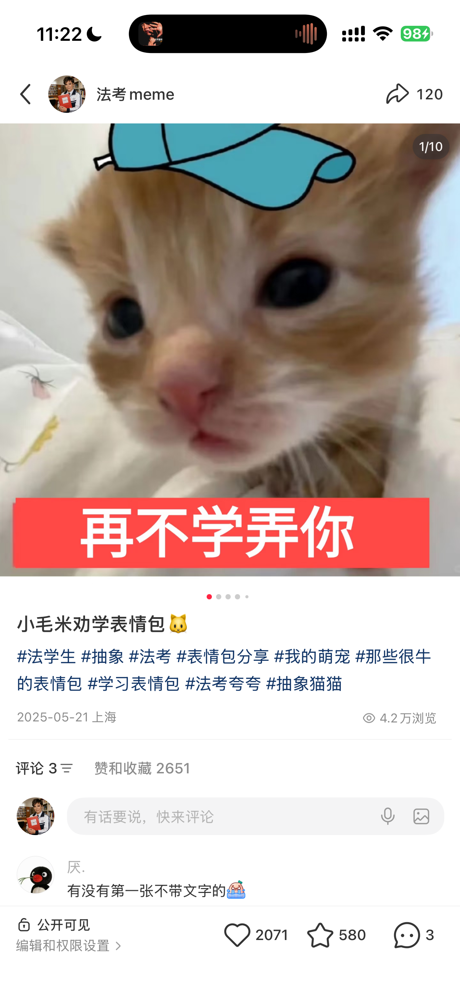
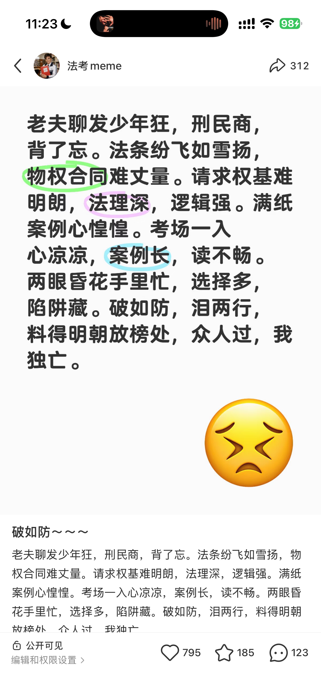
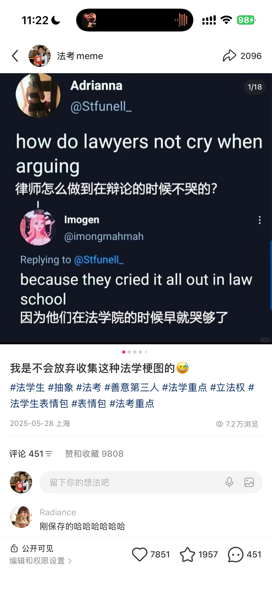
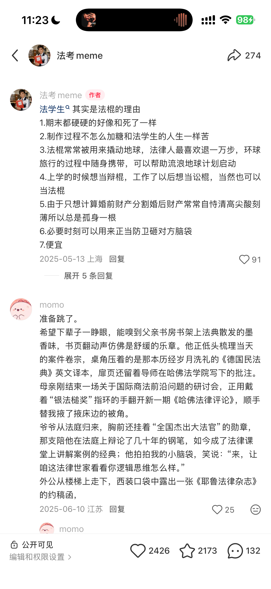

品牌自有垂类内容IP
用法学生共鸣 打开品牌公域流量
在公司内部账号矩阵计划下，我独立从0搭建并运营「法考meme」，用轻量内容获取公域触达，并自然融入厚大教材与课程产品。
{kind=link}
从0搭建与运营约2025.05—至今 · 冷启动阶段即出现多篇高传播内容
从矩阵任务到独立内容IP
公司启动内部账号矩阵计划，希望通过更多轻量账号拓展公域触点。我从0创建「法考meme」，独立确定名称、内容定位与表达风格，并完成全部内容生产。
先让法学生愿意看、愿意转发和讨论，再在浏览过程中自然接触厚大品牌与产品。
不依赖固定人物人设，成为懂法学生情绪的meme账号。
共鸣先于热点
选题不只判断一个话题是否热门，更重要的是它能否映射法学生的学习压力、考试焦虑、专业黑话与身份认同。

热点捕捉
从全网话题、流行梗与法学生日常中寻找具有传播潜力的素材。
先判断能否引发身份共鸣

法学改写
结合中国法学教育与法考语境重新创作，不直接搬运其他国家的法律内容。
把形式转化为本土内容

低门槛表达
让用户在很短时间内看懂笑点，不用先理解复杂法律知识。
先看懂 再转发

讨论空间
不过度解释内容，让用户能够接梗、补充经历并继续创作。
互动由内容自然发生
让产品成为内容的一部分
头像直接使用手持厚大教材的形象，教材成为账号长期视觉识别。具体笔记继续将教材、课程信息与品牌元素放入梗图和内容场景。
头像视觉资产账号头像使用手持厚大教材的形象，保留可识别的品牌线索。
内容原生露出将教材与课程信息放入与笑点和内容场景相关的位置。
35.8万浏览背后的身份共鸣
代表内容以医学生与法学生为身份对照，用极低的理解门槛呈现两个专业群体的共同情绪。
一眼看懂身份 一步进入讨论
明确的身份标签让用户迅速选择立场，简单的视觉结构方便理解和转发，开放式表达则为评论区留下了接梗空间。
身份对照法学生可以立刻确认自己在内容中的位置。
理解门槛视觉关系简单，不依赖复杂背景信息。
分享动机用户可以直接把内容转给同专业朋友。
评论空间内容没有替用户说完，为接梗留出位置。
35.2万浏览
通过身份关系与反差表达制造共鸣。
7,010点赞 561评论

7.2万浏览
将通用情绪转化为法律学习语境。
7,851点赞 2,096分享
5万浏览
围绕法学生抽象表达形成较高收藏。
2,426点赞 2,173收藏

讨论从内容自然发生
以下是另一篇笔记的评论区样本：上方是作者补充的七条文案，下方是用户的长篇二创，分别展示内容延展和社区反馈。
把共鸣拆到文案里
以“决战抽象之巅”为例，把成品里的表达选择、可见反馈和品牌作用分别讲清楚。
用户为什么愿意参与
封面只放“医学生”和“法学生”两组身份，正文用“谁更命苦”留下讨论入口。用户不必先学会一个法律知识点，就能代入自己的学习经历，或把内容转给同专业朋友。
这里的洞察是专业群体的身份认同与学习压力。两个身份的对照，让日常情绪有了一个容易表达的出口。
文案怎样给评论留位置
“决战抽象之巅”给出夸张的情绪，封面负责让人认出自己，正文再留一个开放问题。内容没有替用户完成全部回答，评论区可以继续补充经历和专业梗。
品牌出现在哪里
这篇内容中，可直接看到的品牌线索是手持厚大教材的账号头像。主要画面承担共鸣表达，账号视觉承担品牌识别。教材与课程的进一步植入见本页其他作品。
这类内容的主要任务是吸引法学生参与讨论，并通过账号头像与品牌内容建立识别。
结果支持了什么判断
代表作获得35.8万浏览、5,623条评论和5,950次分享；其他题材也分别获得35.2万和7.2万浏览。
独立完成从0到1
我自约2025年5月起运营该账号，与其他工作穿插进行，独立完成内容创作与发布；冷启动阶段便有多篇内容获得较高浏览。
账号命名 内容方向 视觉风格
选题策划 文案撰写 图片与视频制作
内容发布 评论互动 节奏调整
教材露出 课程植入 品牌识别
多篇内容获得浏览与互动
代表内容分别获得35.8万、35.2万和7.2万浏览，题材涵盖专业身份、学习压力与日常情绪。
成果边界 本项目记录的成果包括内容浏览、赞藏、评论与分享；教材和课程信息以内容露出的形式呈现，销售转化尚无对应统计。
共鸣驱动的内容方法
我会先判断热梗能否与法学生的经历结合，再决定是否改编。围绕学习压力、专业身份和日常情绪组织内容，并在合适的位置融入品牌信息，是这类账号的主要创作思路。